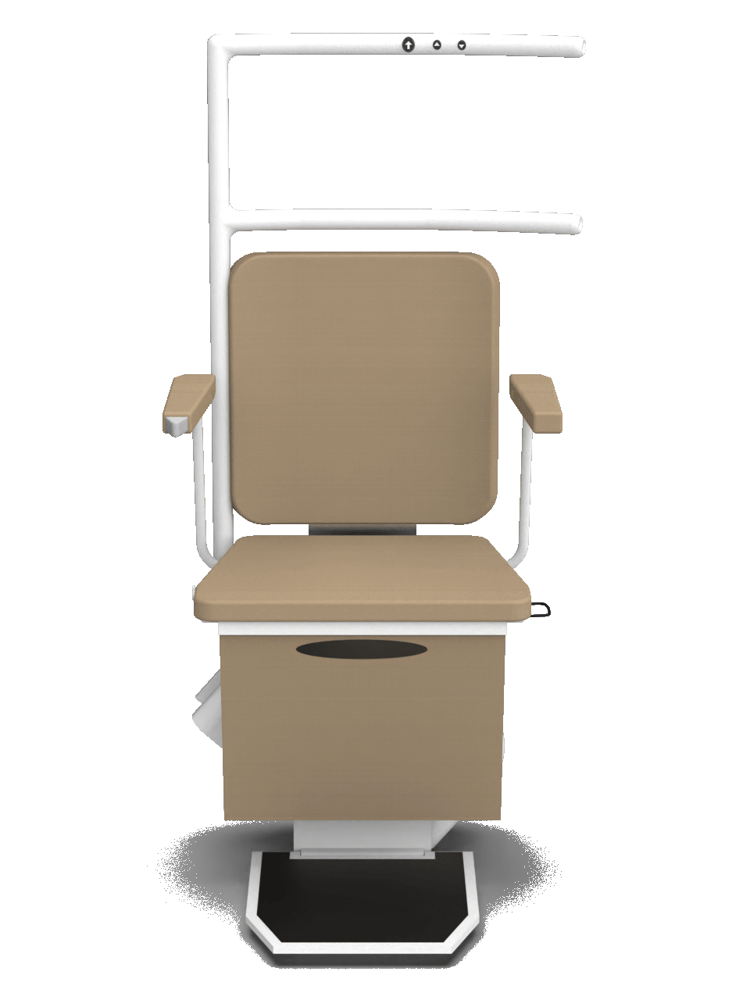

Project Summary
Adapt Stairlift is a set of modular enhancements designed to improve the functionality, safety, and user experience of existing stairlift designs. Rather than replacing core components like the rail or carriage, these adaptations are intended for integration by stairlift manufacturers with minimal modification.
User Research identified two recurring issues:
- Unsafe transport of personal items during stairlift use
- User reluctance due to perceived loss of independence
Secure Luggage Solutions include a removable basket under the seat and a slide-out shelf, allowing users to carry personal items safely.
Integrated Stair Assist Bar allows users with partial mobility to walk up and down stairs with support. It encourages physical activity and confidence, with intuitive movement controls and secure locking positions.
Safety & Compliance: A robust sensor system is designed to comply with BS EN 81-40. Custom seat and armrest hinges are also included to support the modifications.
Design & Materials: All components are made from durable, visually appealing materials that blend seamlessly into home environments.
Adapt Stairlift offers manufacturers a versatile product upgrade that supports a broader range of user needs, encourages earlier adoption, and directly addresses real-world problems with practical, safety-first solutions.